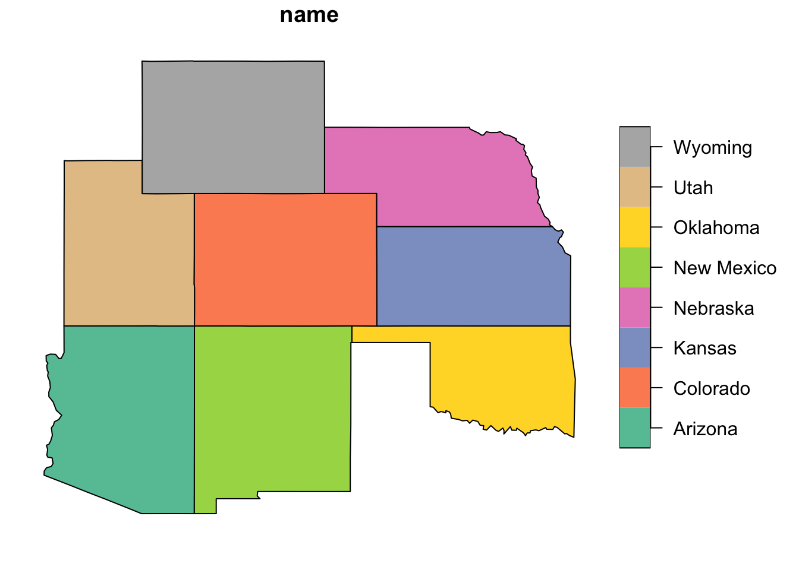
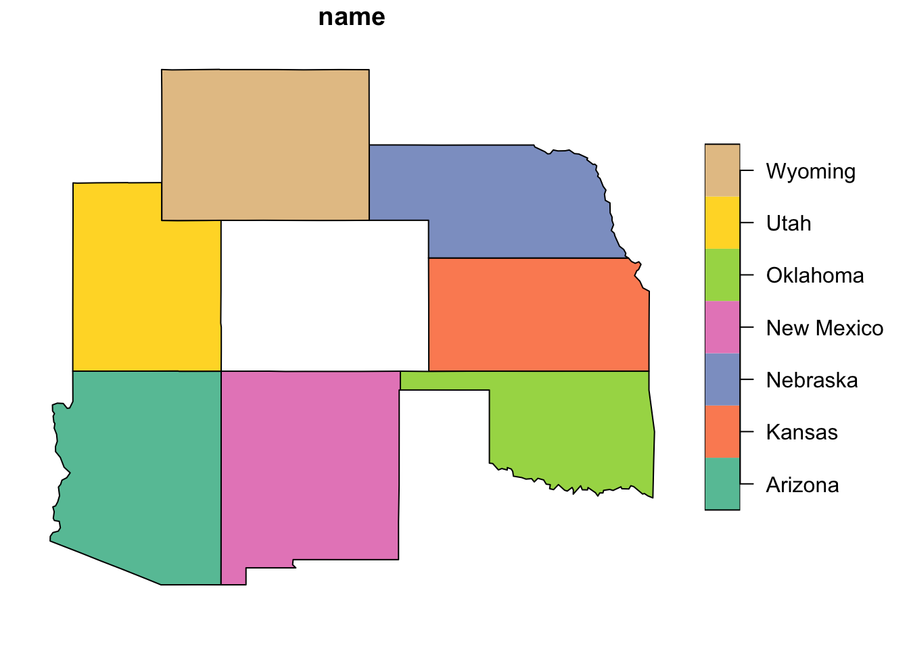
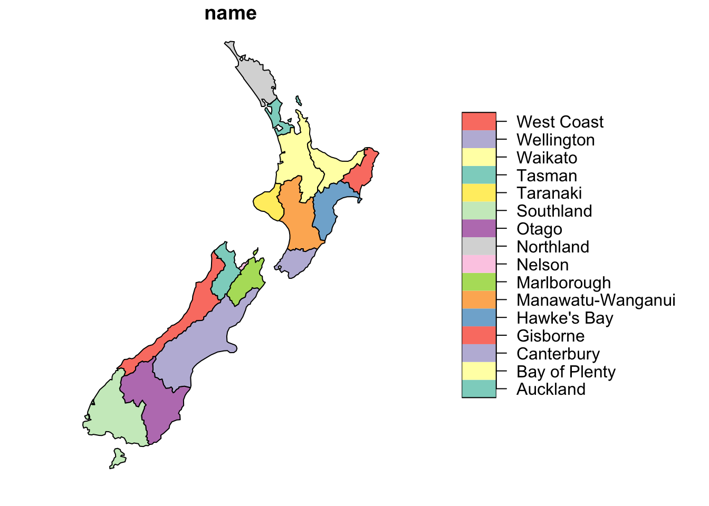
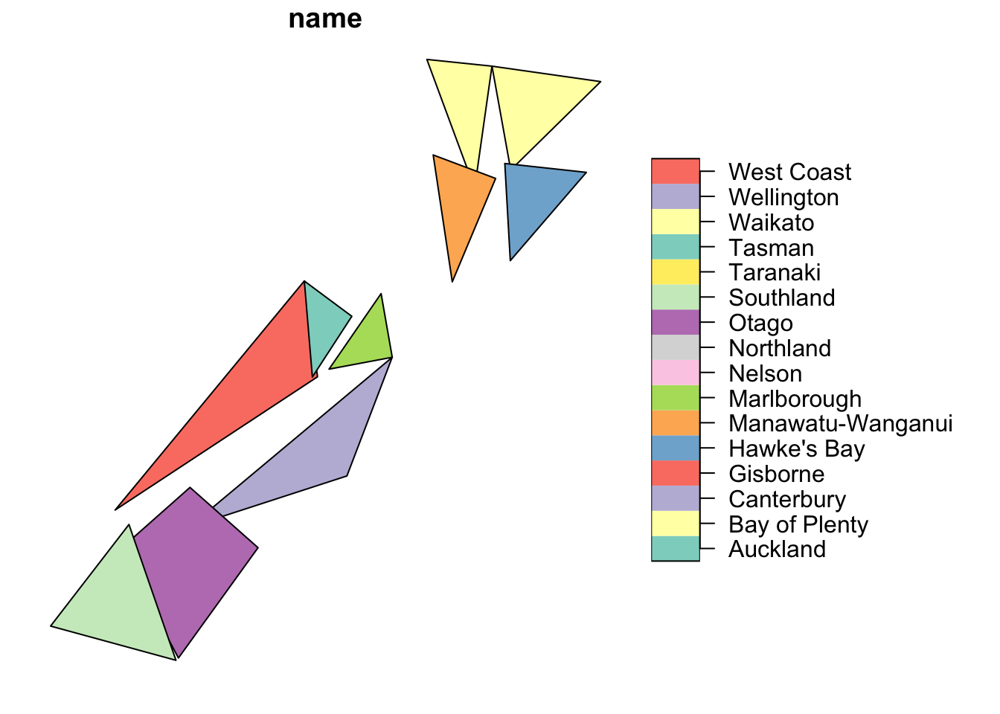

library(sf)
library(spData)
library(tidyverse)The following exercises are modified from Chapters 3, 4, 5 of Geocomputation with R by Rovin Lovelace.
Prerequisites
Let’s load all necessary packages:
Let’s load all necessary data frames:
us_states <- us_states %>%
janitor::clean_names()
us_states_df <- us_states_df %>%
janitor::clean_names()
nz_height <- nz_height %>%
janitor::clean_names()
nz <- nz %>%
janitor::clean_names()United States
Let’s find the states that belong to the West region:
west_states <- dplyr::filter(us_states, region == "West")
dplyr::pull(west_states, name) [1] "Arizona" "Colorado" "Idaho" "Montana" "Nevada"
[6] "California" "New Mexico" "Oregon" "Utah" "Washington"
[11] "Wyoming" And from these states, the states with more than 5,000,000 residents in 2015:
us_states %>%
dplyr::filter(total_pop_15 > 5000000) %>%
dplyr::pull(name) [1] "Arizona" "Colorado" "Florida" "Georgia"
[5] "Indiana" "Massachusetts" "Minnesota" "Missouri"
[9] "New Jersey" "New York" "Pennsylvania" "Texas"
[13] "California" "Illinois" "Maryland" "Michigan"
[17] "North Carolina" "Ohio" "Tennessee" "Virginia"
[21] "Washington" "Wisconsin" Next, what was the total population of the US in 2015?
us_states %>%
dplyr::summarise(pop_2015 = sum(total_pop_15, na.rm = TRUE)) %>%
dplyr::pull(pop_2015)[1] 314375347Let’s now create a new variable named us_states_stats by adding variables from us_states_df to us_states:
class(us_states_df)[1] "tbl_df" "tbl" "data.frame"names(us_states_df)[1] "state" "median_income_10" "median_income_15" "poverty_level_10"
[5] "poverty_level_15"us_states_df <- us_states_df %>%
dplyr::rename(name = state)
us_states_stats <- dplyr::full_join(us_states, us_states_df)What is the class of the new object?
- “sf”
- “data.frame”
Now, calculate the percent change in population density between 2010 and 2015 in each state:
pop_change <- mutate(us_states_stats, percent_change_pop =
(total_pop_15 - total_pop_10)/total_pop_10 * 100)In how many states did population density decrease?
pop_change %>%
dplyr::filter(percent_change_pop < 0) %>%
nrow()[1] 2Create a new object representing all of the states the geographically intersect with Colorado.
- Hint: use the us_states dataset. The most concise way to do this is with the subsetting method “[”.
colorado = us_states %>%
dplyr::filter(name == "Colorado")
colorado_intersect <- us_states[colorado, , op = st_intersects]Create another object representing all the objects that touch (have a shared boundary with) Colorado and plot the result.
- Hint: remember you can use the argument op = st_intersects and other spatial relations during spatial subsetting operations in base R.
colorado_touches <- us_states[colorado, , op = st_touches]plot(colorado_intersect["name"])
plot(colorado_touches["name"])
New Zealand
How many of New Zealand’s high points are in the Canterbury region?
names(nz)[1] "name" "island" "land_area" "population"
[5] "median_income" "sex_ratio" "geom" names(nz_height)[1] "t50_fid" "elevation" "geometry" canterbury <- nz %>%
dplyr::filter(name == "Canterbury")
canterbury_height <- nz_height[canterbury, ]
nrow(canterbury_height)[1] 70This could also be achieved by spatial joining then filter
sf::st_join(nz, nz_height) %>%
dplyr::filter(name == "Canterbury") %>%
nrow()[1] 70Which region has the second highest number of nz_height points? And how many does it have?
nz_join <- sf::st_join(nz, nz_height)
nz_join %>%
dplyr::group_by(name) %>%
dplyr::summarise(n = n()) %>%
dplyr::arrange(dplyr::desc(n))Simple feature collection with 16 features and 2 fields
Geometry type: MULTIPOLYGON
Dimension: XY
Bounding box: xmin: 1090144 ymin: 4748537 xmax: 2089533 ymax: 6191874
Projected CRS: NZGD2000 / New Zealand Transverse Mercator 2000
# A tibble: 16 × 3
name n geom
<chr> <int> <MULTIPOLYGON [m]>
1 Canterbury 70 (((1686902 5353233, 1679996 5344809, 1673699 5328829…
2 West Coast 22 (((1557042 5319333, 1554239 5309440, 1546356 5306561…
3 Waikato 3 (((1860345 5859665, 1857808 5853929, 1850511 5849040…
4 Manawatu-Wanganui 2 (((1866732 5664323, 1868949 5654440, 1865829 5649938…
5 Otago 2 (((1335205 5126878, 1336956 5118634, 1325903 5102723…
6 Auckland 1 (((1803822 5900006, 1791443 5900571, 1790082 5883500…
7 Bay of Plenty 1 (((2049387 5832785, 2051016 5826423, 2040276 5825884…
8 Gisborne 1 (((2024489 5674920, 2019037 5677334, 2016277 5683982…
9 Hawke's Bay 1 (((2024489 5674920, 2024126 5663676, 2032576 5659653…
10 Marlborough 1 (((1686902 5353233, 1679241 5359478, 1667754 5357340…
11 Nelson 1 (((1624866 5417556, 1616643 5424521, 1618569 5428691…
12 Northland 1 (((1745493 6001802, 1740539 5995066, 1733165 5989714…
13 Southland 1 (((1229078 5062352, 1221427 5056736, 1217551 5038521…
14 Taranaki 1 (((1740438 5714538, 1743867 5711520, 1755759 5711464…
15 Tasman 1 (((1616643 5424521, 1624866 5417556, 1620946 5409416…
16 Wellington 1 (((1881590 5489434, 1875693 5479987, 1871588 5466618…Generate simplified versions of the nz dataset. Experiment with different values of keep (ranging from 0.5 to 0.00005) for ms_simplify() and dTolerance (from 100 to 100,000) for st_simplify().
nz_simp1 <- st_simplify(nz, dTolerance = 100)
nz_simp4 <- st_simplify(nz, dTolerance = 100000)
nz_simp2 <- st_simplify(nz, dTolerance = 1000)
nz_simp3 <- st_simplify(nz, dTolerance = 10000)Map the results to show how the simplification changes as you change values.
plot(nz_simp1["name"])
plot(nz_simp2["name"])plot(nz_simp3["name"])plot(nz_simp4["name"])
How many points from the nz_height dataset are within 100km of the Canterbury region?
cant_buffer <- sf::st_buffer(canterbury, dist = 100000)
cant_buffer_height <- nz_height[cant_buffer, ]
nrow(cant_buffer_height)[1] 95Find the geographic centroid of the country of New Zealand. How far is it from the geographic centroid of Canterbury?
nz_agg <- nz %>%
dplyr::summarize(population = sum(population))
nz_centroid <- sf::st_centroid(nz_agg)
cant_centroid <- sf::st_centroid(canterbury)
sf::st_distance(nz_centroid, cant_centroid)Units: [m]
[,1]
[1,] 234192.6